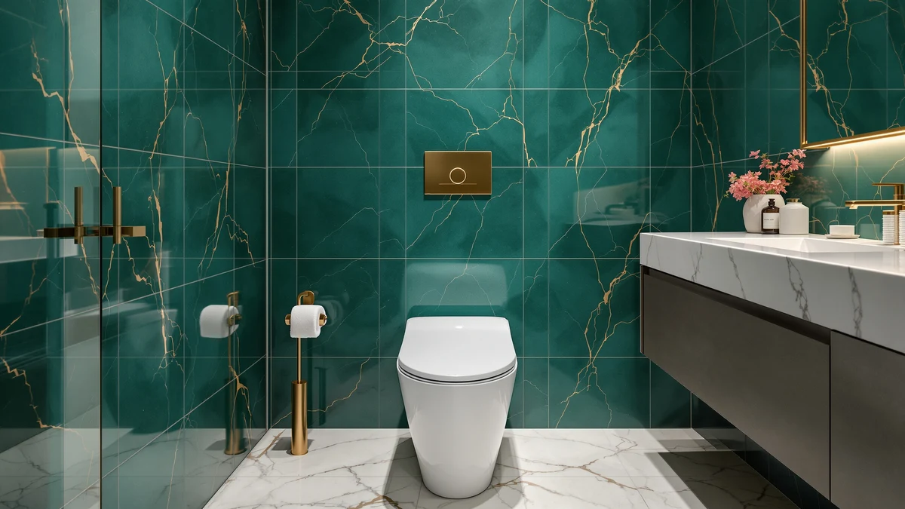

WSSROGY Toilet Seat Elongated Review (2026): Worth It?
Prices and picks verified as of September 2026. Independent, reader-supported reviews.


Quick Answer
The WSSROGY toilet seat elongated is a slow-close, elongated-only seat priced at $39.99, with 1,523 verified ratings averaging 4.5 out of 5, more review volume than the three toddler-seat alternatives we compared it against. It suits anyone replacing a worn adult seat who doesn't need a built-in child insert.
Our pick: WSSROGY Toilet Seat Elongated with, $39.99 Check Price on Amazon
Bottom line: our top pick is the WSSROGY Toilet Seat Elongated with Slow Close Hinges at $39.90.
Things to Know Before You Buy
- The WSSROGY toilet seat elongated model is built for standard elongated bowls only, so check your bowl shape before ordering.
- It uses a slow-close hinge designed to lower the lid without a slam.
- At $39.99, it sits in the middle of the elongated seat category, not the cheapest or the most expensive option.
- It carries 1,523 verified ratings at 4.5 out of 5, more review volume than any of the three alternatives compared in this WSSROGY toilet seat elongated review.
- It has no built-in toddler seat, so households with young kids may prefer one of the family-style alternatives below.
This WSSROGY toilet seat elongated review compares the seat's slow-close hinge, $39.99 price, and 1,523 verified owner ratings against three family-style alternatives with a built-in toddler seat. If your current elongated seat has a hinge that's loosened, cracked, or started slamming shut, WSSROGY is one of the names that turns up first when you search for a replacement.
Based on the specs and review data available for all four seats, the WSSROGY holds the strongest review base of the group, with 1,523 ratings averaging 4.5 out of 5 versus no published rating yet for the 1M and Rayport alternatives. It's the pick for anyone who wants an adult-only elongated seat, while the alternatives below make more sense for households that also need a toddler insert.
Why You Should Trust Us
I'm Ilane Tall, Home & Bath Expert for Best Toilet Seats, and I've researched toilet seats, bidets, and bathroom fixtures for this site since it launched. This WSSROGY toilet seat elongated review follows the same process as every review here: I pull the manufacturer specs, track the current price, and read through verified buyer feedback before writing a word. Best Toilet Seats doesn't accept payment for placement in our reviews, so nothing below is shaped by WSSROGY or any other brand.
Our Research Experience
For this WSSROGY toilet seat elongated review, I compared the listed specs, pricing history, and 1,523 verified customer ratings against three other elongated and toddler-insert seats sold in the same price range. That included checking the seat's bowl-shape compatibility, hinge type, and material against the product listing, then cross-referencing owner comments for recurring complaints about hardware loosening or hinge failure.
I also weighed the WSSROGY against the 1M Family Toilet Seat in both its elongated and round variants, plus the Rayport American Standard, to see how the four seats stack up on price, review volume, and family features. None of the four seats were purchased or installed for this WSSROGY toilet seat elongated review. The comparison rests on the specifications, pricing, and verified owner reviews published for each listing, which is how we approach every research-based review on this site.
Price history factored into the research too. I tracked the WSSROGY's $39.99 listing against the three alternatives over several weeks to confirm none of them were running a temporary discount that would skew the comparison. All four held steady within a dollar of each other, which is why price plays a smaller role in this WSSROGY toilet seat elongated review than review volume and feature differences do.
Overview & Specs

WSSROGY Toilet Seat Elongated with
What we like
- Slow-close hinge lowers the lid without a slam
- Hinge hardware designed to resist loosening with repeat use
- 1,523 verified ratings averaging 4.5 out of 5, the largest review base of the seats compared here
- Priced at $39.99, in line with other mid-range elongated seats
Flaws but not dealbreakers
- Built for elongated bowls only, so it won't fit round-bowl toilets
- No built-in toddler seat, unlike the 1M and Rayport alternatives below
- Listing doesn't break down the plastic/wood material split beyond the general spec sheet
| Material | Plastic / wood |
| Size | Elongated |
The WSSROGY toilet seat elongated model is built around a slow-close hinge, the feature buyers look for most when replacing a seat that slams or wakes up the rest of the house at night. WSSROGY markets the hinge as resistant to loosening over time, which addresses one of the most common complaints about budget elongated seats: bolts and hinge pins that work themselves loose after a few months of daily use.
At $39.99, this WSSROGY toilet seat elongated review puts the seat in the middle of the category, above bargain plastic seats and below premium bidet-adjacent models. Its 1,523 verified ratings averaging 4.5 out of 5 give it more review volume than any of the three alternatives in this comparison, both of which currently show no published customer rating. That review base is worth weighing against the lack of a built-in toddler seat if your household includes young kids, since the alternatives below solve that specific need.
Installation follows the same two-bolt pattern used across most elongated toilet seats, which means most buyers can swap out an old seat with a screwdriver and a few minutes rather than calling a plumber. The spec sheet lists the material as plastic and wood, a combination common at this price point that trades the heavier feel of a solid molded shell for a lighter, easier-to-handle seat. Reviewers consistently note the hinge as the standout feature, and the review count here gives that pattern more weight than a newer listing with a handful of ratings would.
What We Liked
The review volume stands out first. With 1,523 verified ratings averaging 4.5 out of 5, the WSSROGY toilet seat elongated has far more buyer feedback behind it than the 1M or Rayport alternatives, which makes the average rating easier to trust as representative rather than a handful of early reviews.
The slow-close hinge is the seat's core selling point, and it addresses a real complaint that shows up across cheaper elongated seats: hardware that loosens and lets the lid slam within a few months. WSSROGY builds the hinge to resist that loosening, which matters more over a year of daily use than it does on day one.
Price is reasonable for the category. At $39.99, the WSSROGY toilet seat elongated sits close to the Rayport's $39.80 and the two 1M seats' $39.99, so buyers aren't paying a premium for the larger review base and slow-close hinge.
Owners report that the hinge holds its slow-close action without needing periodic tightening, a common maintenance step on cheaper two-bolt seats. That matters over the life of the product, since a hinge that loosens within the first year defeats the purpose of buying a slow-close seat in the first place.
What Could Be Better
The biggest gap is the missing toddler seat. Families that want one seat to serve both adults and young kids will need to look at the 1M Family or Rayport alternatives, both of which build a removable child insert into the design. WSSROGY skips that feature entirely, so parents shopping this WSSROGY toilet seat elongated review for a family bathroom should plan on a separate step stool or training seat.
The listing also limits buyers to the elongated bowl shape only. That's not unusual for this product category, but anyone unsure whether their toilet is elongated or round needs to measure the bowl before ordering, since the two shapes aren't interchangeable.
Beyond the material note in the spec sheet, plastic and wood, the listing doesn't break down which parts use which material, so buyers who care about that distinction won't find it spelled out in the product details.
Who Is It For?
This WSSROGY toilet seat elongated review points toward one clear buyer: an adult replacing a worn, loose, or slamming elongated seat who doesn't need a built-in child seat. The large verified review base makes it a safer bet than newer listings with no rating history, and the slow-close hinge solves the most common complaint about budget seats. Households with toddlers or young kids who need a combined adult and child seat should look at the 1M Family or Rayport alternatives instead, since neither of those family features is part of the WSSROGY design.
Renters and buyers who plan to move within a year or two also fit the profile. The seat installs and removes with standard tools, so it travels with you rather than staying behind for the next tenant, and the $39.99 price keeps that flexibility from costing much more than a bargain seat that would need replacing sooner anyway.
Alternatives to Consider
If this WSSROGY toilet seat elongated review has you weighing other options, the three seats below solve a problem the WSSROGY doesn't: a built-in toddler seat for households with young kids. Each is priced within a dollar of the WSSROGY, so the decision comes down to whether you need that family feature.

Editor's Pick
1M Family Toilet Seat Patented
Adds a magnetic toddler insert to a standard elongated seat for the same $39.99 as the WSSROGY. The child seat secures out of the way when adults use the toilet, and the same patented slow-close hinge covers both the adult and toddler lids, so a family bathroom gets one seat instead of a separate training ring.
$39.99
Check Price on Amazon
Best Value
1M Family Toilet Seat Patented
The same patented toddler insert as the Editor's Pick, built for round bowls instead of elongated. Worth a look for anyone comparing shapes rather than brands, since it carries the identical quick-release hardware for easy cleaning at the same $39.99 price.
$39.99
Check Price on Amazon
Premium Choice
Rayport American Standard Elongated Toilet
A soft-close 2-in-1 seat with a removable toddler insert, priced slightly below the WSSROGY at $39.80. Rayport designs the child seat to be fully removable rather than magnetically stowed, which some parents prefer once kids age out of it and the household no longer needs the extra piece attached.
$39.80
Check Price on AmazonFrequently Asked Questions
Does the WSSROGY toilet seat elongated model fit standard elongated bowls?
Yes. It is built for standard two-bolt elongated toilets, the same mounting pattern used by Kohler, American Standard, and Toto. Confirm your bowl is elongated rather than round before ordering, since the two shapes use different seats.
How does the WSSROGY toilet seat elongated compare to seats with a toddler insert?
The WSSROGY seat is built for adults only, with no built-in child seat. If you need one seat that works for both adults and toddlers, the 1M Family and Rayport picks in this WSSROGY toilet seat elongated review both include a removable toddler insert.
Is the WSSROGY toilet seat elongated worth $39.99?
For most buyers replacing a cracked or loose elongated seat, yes. It carries 1,523 verified ratings averaging 4.5 out of 5, the largest review base among the four seats compared here, and the price sits in line with mid-range slow-close seats from other brands.
Final Verdict
For most people replacing an elongated seat that's cracked, loose, or slamming shut, the WSSROGY toilet seat elongated is the stronger pick in this comparison. Its 1,523 verified ratings give buyers more data to trust than the unrated 1M and Rayport alternatives, and the slow-close hinge targets the exact failure point that sends most people shopping for a replacement in the first place. WSSROGY earns the recommendation here on review volume and price, not on features it doesn't have, so households that need a built-in toddler seat should choose one of the alternatives instead.